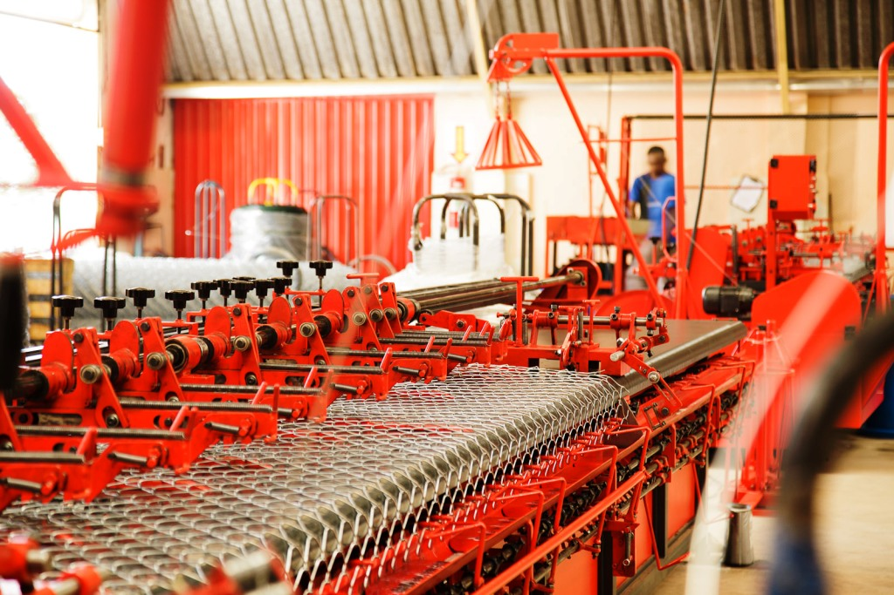
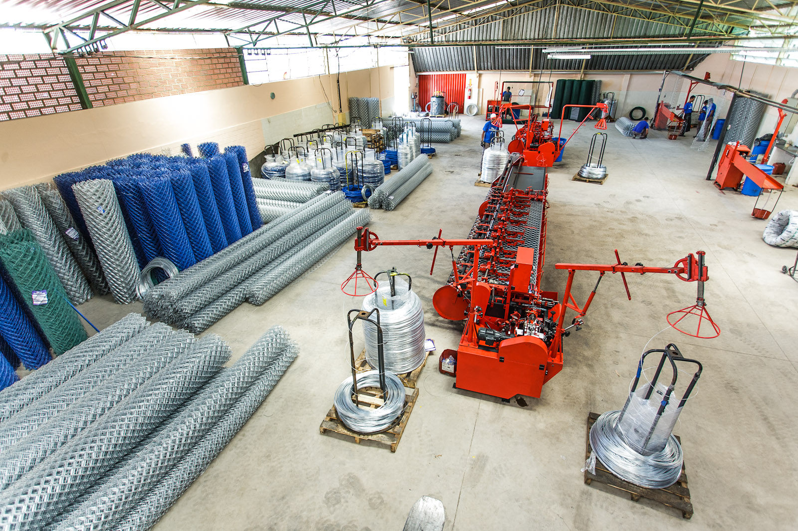
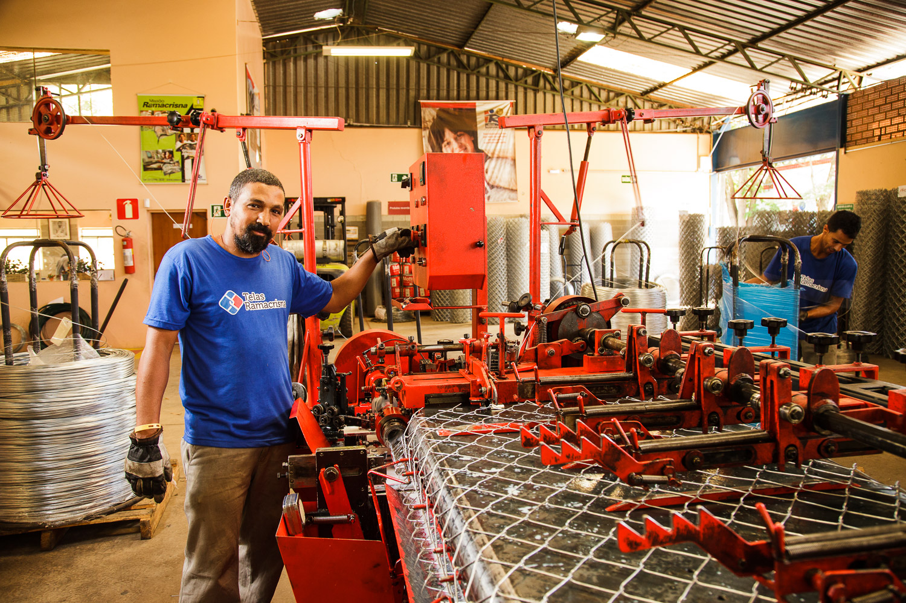
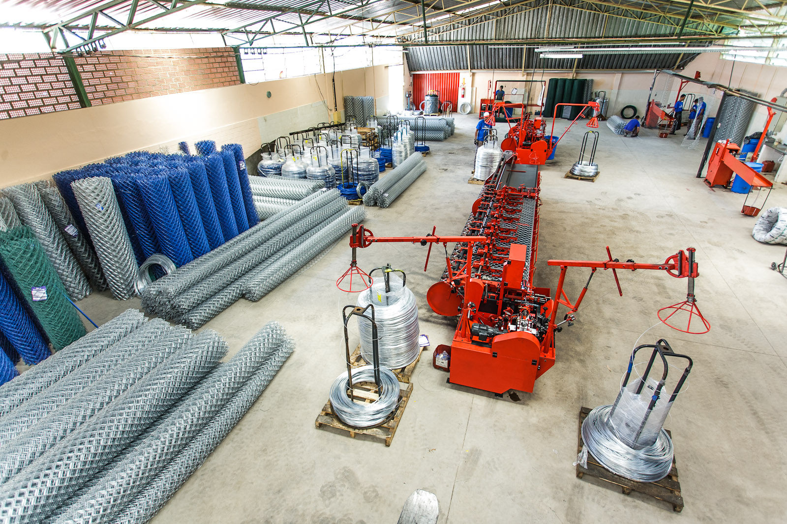
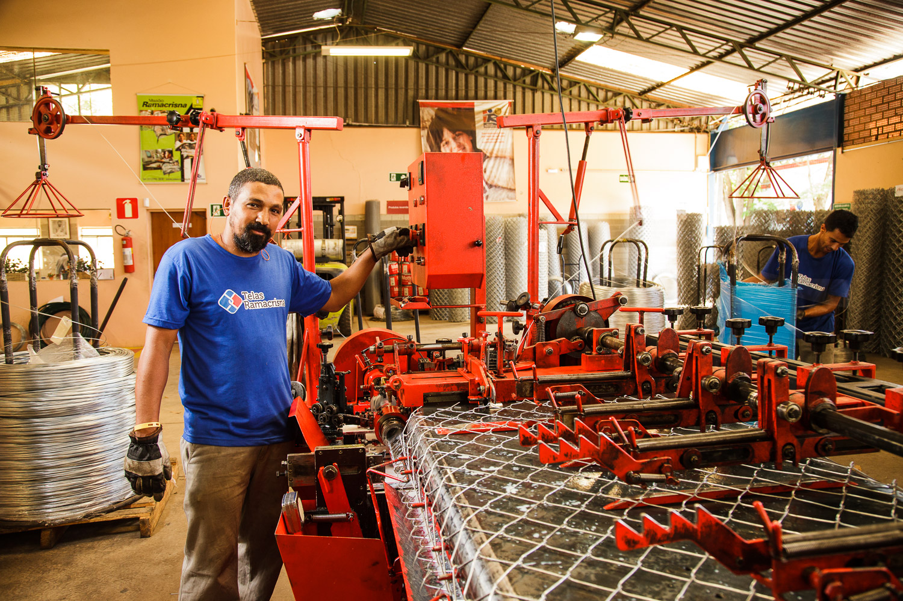

Para diversificar suas receitas e ir além da doação, organização investe em geração de renda própria
14 de Março de 2018 às 06:00
Em tempos de crise, a venda de produtos e serviços aparece como opção de futuro para o financiamento do terceiro setor. Mas para a organização mineira Ramacrisna — que lida com educação, cultura e geração de renda e trabalho —, manter um negócio capaz de contribuir para a sustentabilidade econômica está longe de ser uma novidade. É, na verdade, uma história que começou há mais de 40 anos.
“Em 1975, percebíamos um problema básico: as despesas eram constantes, mas as doações, não. Isso criava dificuldades para a manutenção da Ramacrisna e, por isso, houve a ideia de montar uma fábrica de telas de arame”, explica Solange Bottaro, vice-presidente da instituição.
Desde então, a atividade tem ajudado na saúde financeira da ONG, especialmente em momentos mais adversos. “O ano de 2017 foi muito difícil para todos, mas nosso negócio conseguiu bancar parte dos custos”, diz Solange, sobre o empreendimento que faturou mais de R$ 5 milhões em 2016, quando o rendimento total da organização havia sido de R$ 21 milhões.
Mas como o Instituto Ramacrisna foi parar no ramo de telas, negócio que não tem qualquer relação com sua causa? Solange explica: “Naquela época, Betim, onde fica nossa sede, era uma área rural, com muitos sítios e fazendas. Havia, então, público consumidor em nosso entorno para as telas usadas em cercas.”
A coisa engrenou mesmo a partir de 1986, quando o amadorismo foi definitivamente deixado de lado. “Naquele ano, procuramos o Sebrae (Serviço Brasileiro de Apoio às Micro e Pequenas Empresas) para nos ajudar a profissionalizar a indústria. Depois, iniciamos uma parceria com a Fundação Dom Cabral (uma das principais escolas de negócio do mundo, sediada no município mineiro de Nova Lima) para capacitar nossos funcionários”, conta.
O objetivo não era apenas aprimorar a produção, mas entender como funcionava o mercado. “Hoje, vendemos para todo o país. Nossas telas são usadas para as mais diversas finalidades, como em alambrados, em aviários e para a piscicultura”, diz a vice-presidente do instituto.
A prática do negócio está previsto no estatuto da Ramacrisna, e a indústria é um “departamento” comandado por um profissional especializado. “Uma das características de se ter uma prática econômica dentro de uma organização sem fins lucrativos é que seu lucro tem de ser revertido para a causa social”, ressalta.
Mão na massa
Cerca de dois anos após iniciar no ramo de telas de arame, o Instituto Ramacrisna decidiu encarar outro desafio: produzir e comercializar massas caseiras. Tudo começou de maneira quase acidental, em 1977, quando a organização recebeu a doação de um maquinário de uma fábrica que havia acabado de fechar.
No início, os talharins e lasanhas eram para consumo interno, mas diante de tantos elogios, veio a ideia de transformá-los em mais uma fonte de renda para a ONG. Em função da qualidade, os produtos tiveram boa aceitação na Grande Belo Horizonte e, por mais de uma década, fizeram sucesso nas gôndolas dos supermercados de lá — em determinado momento, as massas chegaram a dar mais lucro do que as telas. Mas com a entrada de marcas estrangeiras no Brasil, especialmente as italianas, o instituto não suportou a concorrência e, depois de uma análise feita pela Fundação Dom Cabral, decidiu que o melhor seria encerrar o negócio.
Energia solar
Com 79 anos (a Ramacrisna foi fundada em 1959), houve tempo suficiente para a organização criar uma grande rede de parceiros, tanto na academia quanto nos setores privado e público. Em 2018, muito provavelmente isso se reverterá numa nova frente de negócios para a instituição.
“Estamos criando o projeto ‘Polímeros para inclusão social’. A Universidade Federal de Minas Gerais está desenvolvendo uma tecnologia para coletores solares a partir de restos de computadores, que são muito poluentes quando descartados no meio ambiente”, revela Solange.
Os recursos para viabilizar a iniciativa vêm, por sua vez, da Companhia Energética de Minas Gerais (Cemig), que vai ajudar a Ramacrisna a criar a fábrica, a qualificar pessoas e a iniciar a produção.
A entrada no ramo da energia solar está afinada com um dos objetivos da organização para o futuro: intensificar parcerias com o setor privado para reduzir a participação de parceiros políticos, aumentando sua independência.
Com toda essa experiência, Solange revela que a organização é bastante procurada por outras que buscam também promover projetos de autossustentabilidade: “Isso é cada vez mais necessário. Não dá para ficar preso ao passado, a como as coisas eram feitas antes. Muitas organizações fecharam por causa disso.”


“Em 1975, percebíamos um problema básico: as despesas eram constantes, mas as doações, não. Isso criava dificuldades para a manutenção da Ramacrisna e, por isso, houve a ideia de montar uma fábrica de telas de arame”, explica Solange Bottaro, vice-presidente da instituição.
Desde então, a atividade tem ajudado na saúde financeira da ONG, especialmente em momentos mais adversos. “O ano de 2017 foi muito difícil para todos, mas nosso negócio conseguiu bancar parte dos custos”, diz Solange, sobre o empreendimento que faturou mais de R$ 5 milhões em 2016, quando o rendimento total da organização havia sido de R$ 21 milhões.
Mas como o Instituto Ramacrisna foi parar no ramo de telas, negócio que não tem qualquer relação com sua causa? Solange explica: “Naquela época, Betim, onde fica nossa sede, era uma área rural, com muitos sítios e fazendas. Havia, então, público consumidor em nosso entorno para as telas usadas em cercas.”
A coisa engrenou mesmo a partir de 1986, quando o amadorismo foi definitivamente deixado de lado. “Naquele ano, procuramos o Sebrae (Serviço Brasileiro de Apoio às Micro e Pequenas Empresas) para nos ajudar a profissionalizar a indústria. Depois, iniciamos uma parceria com a Fundação Dom Cabral (uma das principais escolas de negócio do mundo, sediada no município mineiro de Nova Lima) para capacitar nossos funcionários”, conta.
O objetivo não era apenas aprimorar a produção, mas entender como funcionava o mercado. “Hoje, vendemos para todo o país. Nossas telas são usadas para as mais diversas finalidades, como em alambrados, em aviários e para a piscicultura”, diz a vice-presidente do instituto.
A prática do negócio está previsto no estatuto da Ramacrisna, e a indústria é um “departamento” comandado por um profissional especializado. “Uma das características de se ter uma prática econômica dentro de uma organização sem fins lucrativos é que seu lucro tem de ser revertido para a causa social”, ressalta.
Mão na massa
Cerca de dois anos após iniciar no ramo de telas de arame, o Instituto Ramacrisna decidiu encarar outro desafio: produzir e comercializar massas caseiras. Tudo começou de maneira quase acidental, em 1977, quando a organização recebeu a doação de um maquinário de uma fábrica que havia acabado de fechar.
No início, os talharins e lasanhas eram para consumo interno, mas diante de tantos elogios, veio a ideia de transformá-los em mais uma fonte de renda para a ONG. Em função da qualidade, os produtos tiveram boa aceitação na Grande Belo Horizonte e, por mais de uma década, fizeram sucesso nas gôndolas dos supermercados de lá — em determinado momento, as massas chegaram a dar mais lucro do que as telas. Mas com a entrada de marcas estrangeiras no Brasil, especialmente as italianas, o instituto não suportou a concorrência e, depois de uma análise feita pela Fundação Dom Cabral, decidiu que o melhor seria encerrar o negócio.
Energia solar
Com 79 anos (a Ramacrisna foi fundada em 1959), houve tempo suficiente para a organização criar uma grande rede de parceiros, tanto na academia quanto nos setores privado e público. Em 2018, muito provavelmente isso se reverterá numa nova frente de negócios para a instituição.
“Estamos criando o projeto ‘Polímeros para inclusão social’. A Universidade Federal de Minas Gerais está desenvolvendo uma tecnologia para coletores solares a partir de restos de computadores, que são muito poluentes quando descartados no meio ambiente”, revela Solange.
Os recursos para viabilizar a iniciativa vêm, por sua vez, da Companhia Energética de Minas Gerais (Cemig), que vai ajudar a Ramacrisna a criar a fábrica, a qualificar pessoas e a iniciar a produção.
A entrada no ramo da energia solar está afinada com um dos objetivos da organização para o futuro: intensificar parcerias com o setor privado para reduzir a participação de parceiros políticos, aumentando sua independência.
Com toda essa experiência, Solange revela que a organização é bastante procurada por outras que buscam também promover projetos de autossustentabilidade: “Isso é cada vez mais necessário. Não dá para ficar preso ao passado, a como as coisas eram feitas antes. Muitas organizações fecharam por causa disso.”


Notícias mais populares
Gestão
Em agosto de 2017, a revista ÉPOCA e o Instituto Doar divulgaram a primeira ediç&...
Contexto e tendências
Criado para tornar mais transparentes as parcerias entre a administração públic...
Profissional captador
A captação de recursos é fundamental para a sustentabilidade de uma organiza&cc...